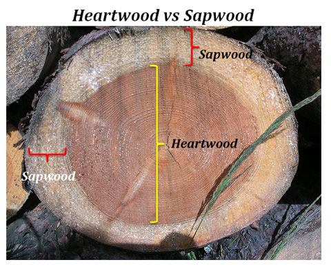
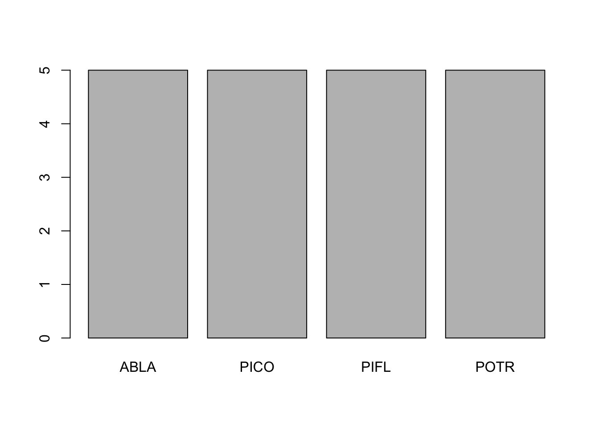
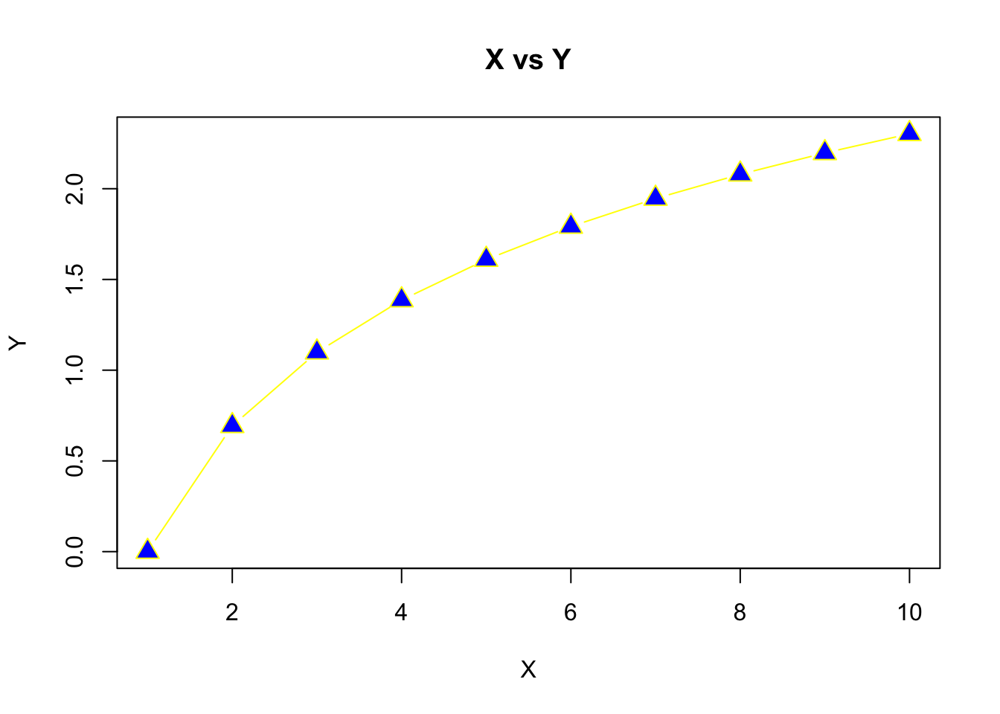

3 Playing with Tree Data
Let’s say you’re an ecologist who collected some tree data samples out in the field. Let’s load this into R and explore the data. In order to proceed, you’ll need to download TreeData.csv which is located here - (https://github.com/jsimkins2/geog473-673/tree/master/datasets/TreeData.csv)
# Navigate to the location where your file is stored locally. Use read.csv() function to load the data
treedat <- read.csv("/Users/james/Documents/Github/geog473-673/datasets/TreeData.csv")
treedat## tree spp season Infected dbh SapDepth BarkThick NobarkArea Heartwood
## 1 1 PICO Summer Yes 42.2 8.4 0.3 1359.2 483.1
## 2 2 ABLA Fall Yes 13.4 2.0 0.4 124.7 58.1
## 3 3 ABLA Summer No 13.1 1.5 0.3 122.7 70.9
## 4 4 PICO Spring No 15.0 4.1 0.2 167.4 32.2
## 5 5 POTR Winter Yes 14.2 3.6 0.0 158.4 38.5
## 6 6 POTR Winter Yes 20.0 5.9 0.0 314.2 52.8
## 7 7 ABLA Summer Yes 9.1 2.1 0.3 56.7 14.5
## 8 8 ABLA Spring No 9.2 2.5 0.5 52.8 8.0
## 9 9 ABLA Fall Yes 27.3 3.0 0.6 535.0 317.3
## 10 10 PICO Fall No 11.2 3.4 0.3 88.2 11.3
## 11 11 PICO Spring Yes 18.0 5.9 0.3 237.8 24.6
## 12 12 POTR Summer No 9.0 3.0 0.0 63.6 7.1
## 13 13 POTR Spring No 15.4 4.1 0.0 186.3 40.7
## 14 14 POTR Winter No 24.1 6.2 0.0 456.2 107.5
## 15 15 PICO Winter Yes 24.2 7.0 0.5 422.7 66.5
## 16 16 PIFL Fall No 14.4 4.2 0.5 141.0 19.6
## 17 17 PIFL Winter No 13.1 2.2 0.6 111.2 44.2
## 18 18 PIFL Summer Yes 21.5 5.1 0.6 323.7 80.1
## 19 19 PIFL Spring No 13.4 2.2 0.5 120.8 50.3
## 20 20 PIFL Fall Yes 16.2 3.5 0.5 181.5 52.8
## SapArea
## 1 876.1
## 2 66.6
## 3 51.8
## 4 135.2
## 5 119.9
## 6 261.3
## 7 42.2
## 8 44.8
## 9 217.7
## 10 76.9
## 11 213.2
## 12 56.5
## 13 145.5
## 14 348.7
## 15 356.3
## 16 121.4
## 17 67.0
## 18 243.5
## 19 70.5
## 20 128.6treedat is a data frame. As a reminder, a data frame is essentially a 2-dimensional array that contains a combination of vectors (columns of data) that are of the class; integer, numeric, character. This is different from a matrix which can only contain 1 type of data. In this case, we have some tree data that includes species of tree, season the data was collected, diameter of the tree, bark thickness, area of no bark, heartwood diameter, and sapwood diameter.

Now, let’s edit htis dataframe to the format we want it in. Then, let’s plot a histogram of bark thickness and a boxplot of sapdepth by species.
# let's set the rownames equal to the tree column
treedat <- read.csv("/Users/james/Documents/Github/geog473-673/datasets/TreeData.csv",row.names='tree')
# print treedat
treedat## spp season Infected dbh SapDepth BarkThick NobarkArea Heartwood SapArea
## 1 PICO Summer Yes 42.2 8.4 0.3 1359.2 483.1 876.1
## 2 ABLA Fall Yes 13.4 2.0 0.4 124.7 58.1 66.6
## 3 ABLA Summer No 13.1 1.5 0.3 122.7 70.9 51.8
## 4 PICO Spring No 15.0 4.1 0.2 167.4 32.2 135.2
## 5 POTR Winter Yes 14.2 3.6 0.0 158.4 38.5 119.9
## 6 POTR Winter Yes 20.0 5.9 0.0 314.2 52.8 261.3
## 7 ABLA Summer Yes 9.1 2.1 0.3 56.7 14.5 42.2
## 8 ABLA Spring No 9.2 2.5 0.5 52.8 8.0 44.8
## 9 ABLA Fall Yes 27.3 3.0 0.6 535.0 317.3 217.7
## 10 PICO Fall No 11.2 3.4 0.3 88.2 11.3 76.9
## 11 PICO Spring Yes 18.0 5.9 0.3 237.8 24.6 213.2
## 12 POTR Summer No 9.0 3.0 0.0 63.6 7.1 56.5
## 13 POTR Spring No 15.4 4.1 0.0 186.3 40.7 145.5
## 14 POTR Winter No 24.1 6.2 0.0 456.2 107.5 348.7
## 15 PICO Winter Yes 24.2 7.0 0.5 422.7 66.5 356.3
## 16 PIFL Fall No 14.4 4.2 0.5 141.0 19.6 121.4
## 17 PIFL Winter No 13.1 2.2 0.6 111.2 44.2 67.0
## 18 PIFL Summer Yes 21.5 5.1 0.6 323.7 80.1 243.5
## 19 PIFL Spring No 13.4 2.2 0.5 120.8 50.3 70.5
## 20 PIFL Fall Yes 16.2 3.5 0.5 181.5 52.8 128.6## [1] "spp" "season" "Infected" "dbh" "SapDepth"
## [6] "BarkThick" "NobarkArea" "Heartwood" "SapArea"## [1] 42.2 13.4 13.1 15.0 14.2 20.0 9.1 9.2 27.3 11.2 18.0 9.0 15.4 24.1 24.2
## [16] 14.4 13.1 21.5 13.4 16.2# rename the dbh variable, but first let's be sure our index of the dbh variable is correct
colnames(treedat)[4]## [1] "dbh"## spp season Infected tree.diameter SapDepth BarkThick NobarkArea Heartwood
## 1 PICO Summer Yes 42.2 8.4 0.3 1359.2 483.1
## 2 ABLA Fall Yes 13.4 2.0 0.4 124.7 58.1
## 3 ABLA Summer No 13.1 1.5 0.3 122.7 70.9
## 4 PICO Spring No 15.0 4.1 0.2 167.4 32.2
## 5 POTR Winter Yes 14.2 3.6 0.0 158.4 38.5
## 6 POTR Winter Yes 20.0 5.9 0.0 314.2 52.8
## 7 ABLA Summer Yes 9.1 2.1 0.3 56.7 14.5
## 8 ABLA Spring No 9.2 2.5 0.5 52.8 8.0
## 9 ABLA Fall Yes 27.3 3.0 0.6 535.0 317.3
## 10 PICO Fall No 11.2 3.4 0.3 88.2 11.3
## 11 PICO Spring Yes 18.0 5.9 0.3 237.8 24.6
## 12 POTR Summer No 9.0 3.0 0.0 63.6 7.1
## 13 POTR Spring No 15.4 4.1 0.0 186.3 40.7
## 14 POTR Winter No 24.1 6.2 0.0 456.2 107.5
## 15 PICO Winter Yes 24.2 7.0 0.5 422.7 66.5
## 16 PIFL Fall No 14.4 4.2 0.5 141.0 19.6
## 17 PIFL Winter No 13.1 2.2 0.6 111.2 44.2
## 18 PIFL Summer Yes 21.5 5.1 0.6 323.7 80.1
## 19 PIFL Spring No 13.4 2.2 0.5 120.8 50.3
## 20 PIFL Fall Yes 16.2 3.5 0.5 181.5 52.8
## SapArea
## 1 876.1
## 2 66.6
## 3 51.8
## 4 135.2
## 5 119.9
## 6 261.3
## 7 42.2
## 8 44.8
## 9 217.7
## 10 76.9
## 11 213.2
## 12 56.5
## 13 145.5
## 14 348.7
## 15 356.3
## 16 121.4
## 17 67.0
## 18 243.5
## 19 70.5
## 20 128.6# Now let's do some plotting
par(mfrow=c(1,2)) ## create plot array of 1 row x 2 columns
par(cex.axis=0.8) ## shrinks the name size of the x axes. If we don't do this, not all the names in the boxplot show up
par(cex.main=0.7) ## shrinks the name size of the titles. If we don't do this, the titles don't fit in the window
# Use the his() function to plot a histogram
hist(treedat$BarkThick, xlab= "Bark Thickness (cm)", main= "Histogram: Bark Thickness", col= "darkgreen")
boxplot(SapDepth ~ spp, data= treedat, ylab= "SapDepth", col= "darkslateblue", main= "Boxplot: Sapwood Depth by Species")
hist() is the histogram function; boxplot() is the boxplot function. The boxplot() function using a slightly different syntax for plotting in the form of y ~ x, or y versus x. hist(), on the other hand, can only plot numerical values. For categorical data, such as our tree species column, must be plotted with barplot() and the table() function.
# print the table function output of treedat$spp - notice the categorical help from the table function
table(treedat$spp)##
## ABLA PICO PIFL POTR
## 5 5 5 5
# customize the barplot function
barplot(table(treedat$spp), main="SPP Count Barplot",
xlab="SPP",
ylab="Count",
border="red",
col="blue",
density=10)
3.1 Assignment:
Using the TreeData.csv above, complete the following:
- Rename ‘spp’ variable to ‘species’
- Make a 3 column plot consisting of Sapwood Depth histogram, boxplot of Bark Thickness by species, and a histogram showing the seasonal counts.
- Submit plot to Assignment 1 on Canvas
Your final plot should look like this
